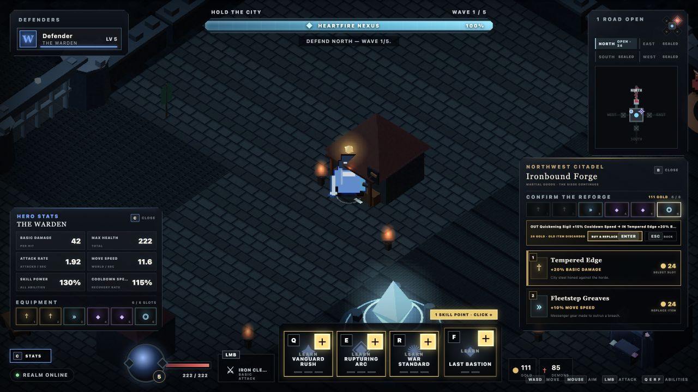

Hold the city
The Heartfire Nexus is always the objective. Gates may fall; the run ends only when the city loses its heart.
SIEGEHEART DEVELOPMENT COMPANION
A 1–4 player dark-fantasy action RPG about defending the Heartfire Nexus, surviving the breach, and carrying the fight back through the invasion rift.
Playable game hosting remains pending a configured Bun/WebSocket host.
LATEST VERIFIED CHECKPOINT · 0.1.9
A full build no longer turns the city's physical shops into dead ends. At either local vendor, choose a ware, choose the occupied socket to replace, then explicitly confirm the reforge while the siege continues.
FROM 0.1.8 The two local shops, unrestricted duplicates, curated wares, and non-pausing combat remain unchanged.

The Heartfire Nexus is always the objective. Gates may fall; the run ends only when the city loses its heart.
Warden, Riftstalker, Ashcaller, and Gravebinder share one control grammar while changing how every horde is solved.
Survive the breach, stabilize the Nexus, then push together through the north road and destroy the Rift Heart.